Petr Motýl - Na třešňovém dřevě
Na třešňovém dřevě
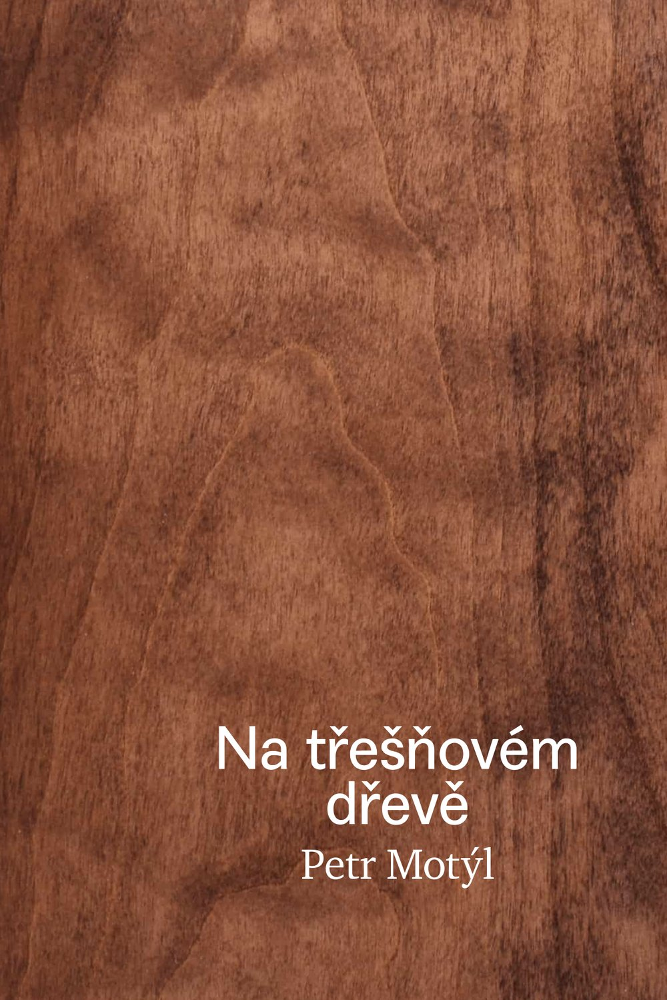
Obálka
motýlsobě, 2025
Grafická úprava Jakub Krč, studio Lacerta
vytiskla tiskárna Nakladatelství Karolinum
Ukázka
APOLINÁŘSKOU
soumrak rozsypal pepř
a koření Nového Světa
žárovka splétá
spleť listí v kružbě
gotického okna
nad vlahým asfaltem:
dolů dolů ze stráně Apolinářskou
z vinárny U Španěla
z okna alkáčů vyjel tuňák
obrovský přes půl nebe
na břiše strašná rána se mu bělá
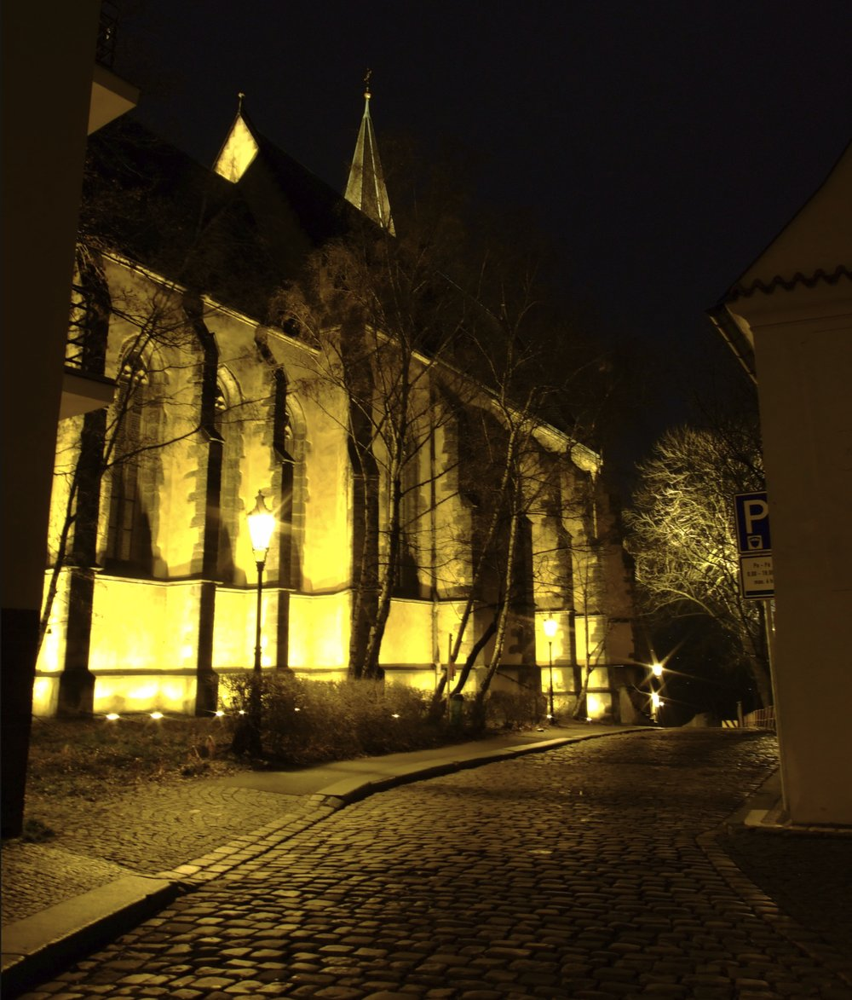
U kostela svatého Apolináře. © Aktron / CC BY-SA 2.5 / Wikimedia Commons
O 52 BÁSNÍCH VE SBÍRCE
Poznámky autora k vlastním básním… Někdo tak činí, někdo nikoliv, patřím jednoznačně k těm druhým. Ale rád v psaní leccos zkouším. Z básníků, kterých si vážím a které jsem osobně poznal, byl velkým vykladačem vlastní tvorby Petr Král, konal tak ale spíše písemně než v hovoru. Nebo možná viděl, že tohle téma pro mě není až tak zajímavé, a nemluvil o tom se mnou, zatímco s některými jinými ano, to je docela dobře možné.
Moje poznámky k mým básním nejsou tak určující, jako jsou ty Petra Krále, on měl snahu čtenáři vyznačit, jak má jeho text chápat a prožívat, to byl jeho styl. Ono to pro spoustu čtenářů má smysl, chtějí poradit. A jsou rádi, když jim někdo, kdo poradit umí, poradí. A Petr Král byl typ intelektuála, uměl formulovat, používal intelektuálně univerzitní slovník. Ale to šlo vždycky nějak mimo mě, inu každý jsme jiný.
Petr Král mi chybí, to je jisté...
A mé poznámky ke každé z básní sbírky Na třešňovém dřevě jejím čtenářům nejspíš ve výkladu příliš nepomohou. Ale chtěl jsem to vlastně?
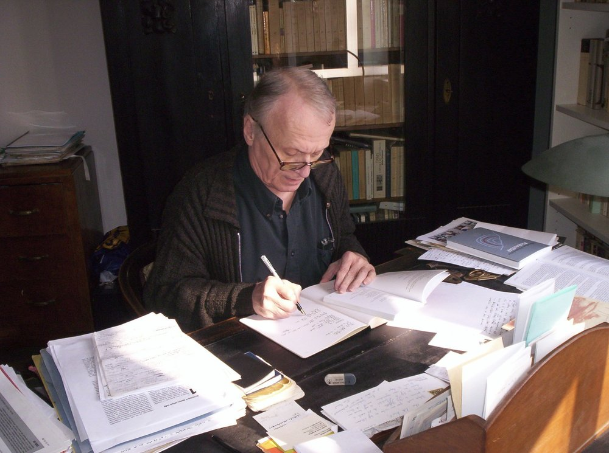
Petr Král 2008. © Wanda Heinrichová / Public domain / Wikimedia Commons
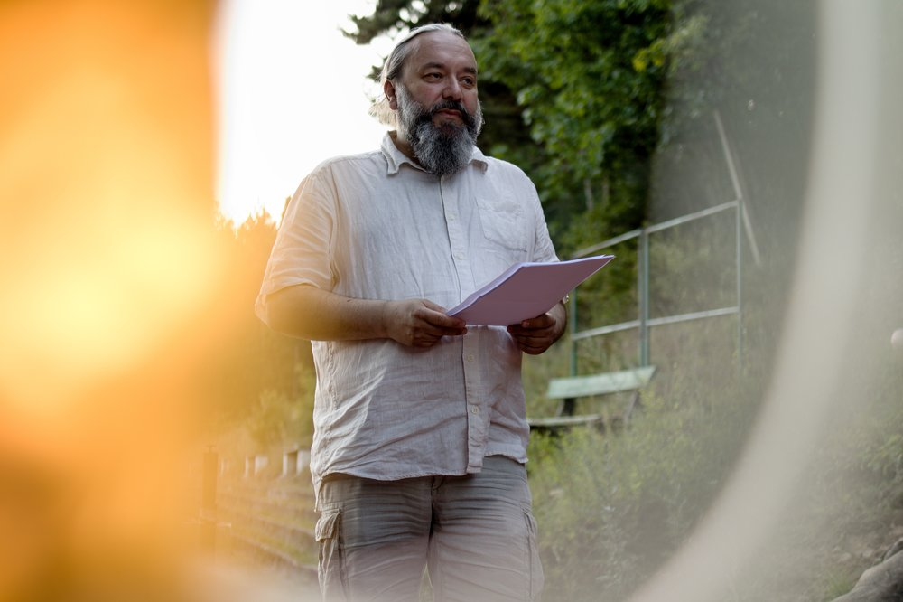
Petr Motýl 2017. © Jiří Škorvaga
NA TŘEŠŇOVÉM DŘEVĚ – A KRAJKY (52)
Jako ilustrace jsou zde použity krajky (převážně italské) ze 17. století, které v knížce nejsou. Všechny krajky jsou legální.
© Cleveland Museum of Art / Public domain / Wikimedia Commons
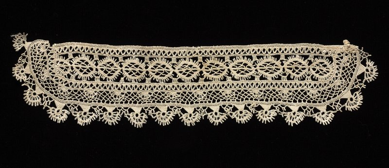
TYGŘI (1)
Báseň začíná ohlasem na Williama Blakea: Tygře, tygře, žhavě žhneš. V hlavě mi zaznělo zhudebnění valaško-meziříčské kapely Betula Pendula, vybavil se mi čas, kdy mi bylo něco přes dvacet a s poezií jsem nesměle začínal, pokud jde o její psaní. A už jsem zapisoval…
Čas, který uplynul, ale který je za oknem, před kterým tu báseň píšu. Stačí natáhnout ruku.
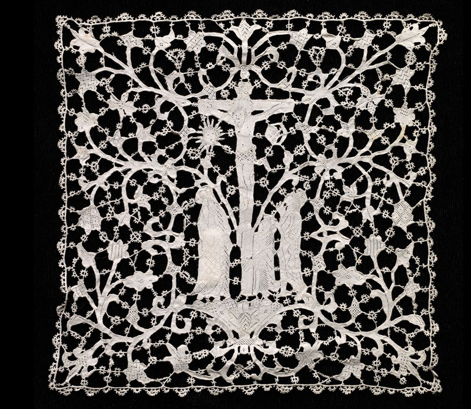
KATEŘINA (2)
Část horního Nového Města v Praze, která mě ve sbírce hodně inspirovala. Pořádali jsme tam s mojí ženou několik vlastivědných vycházek, povětšinou pro učitelky, a ještě i trochu pro Archiv bezpečnostních složek, kde jsem byl tehdy vrátným. V archivu v onu dobu působilo ještě vedení, kterému se zamlouvalo, že vrátný vodí zaměstnance Prahou po vlastivědě, to se pak v roce 2024 změnilo a mně skončila smlouva vrátného a už mi ji neprodloužili. A to jsem byl rád, ale zároveň jsem to chápal jako nespravedlnost.
Ale k básním. Vymezím tu geografickou oblast, která je ve sbírce hodně přítomná. Nachází se mezi ulicemi Na slupi a Ječnou, kterými jede tramvaj z Karlova náměstí, a ulicí Ke Karlovu a hradbami nad Nuselskými údolím.
Kostel svaté Kateřiny tam je, ne moc přístupný zevnitř. Ale dá se tam jít, bohoslužby tam jsou. Pravoslavné. A v zahradě na zdi za kostelem byla tehdy nasprejovaná dlouhá kočka. Hodně dlouhá kočka.
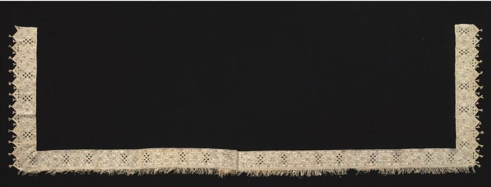
DRÁHY (3)
Báseň se odvíjí od hvězd na obloze, jak jsou vidět večer z vyhlídky za kostelem svatého Apolináře.
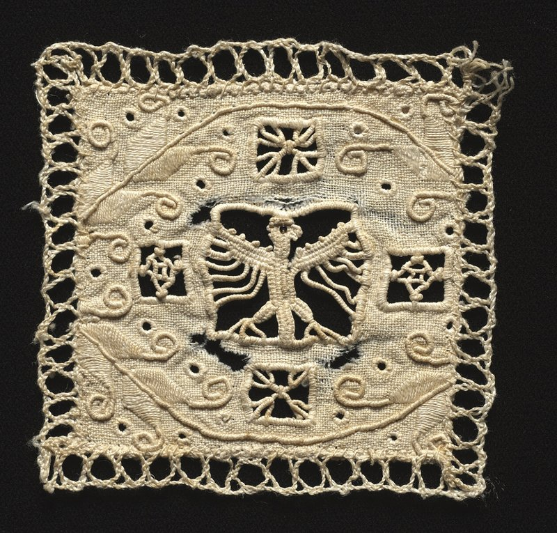
MRAKY (4)
Malvazinky, bydliště Ivana Wernische. Jedna z jeho nejmilovanějších knížek: Velký Meaulnes.
Jakub Arbes, Malvazinky, Svatý Xaverius.
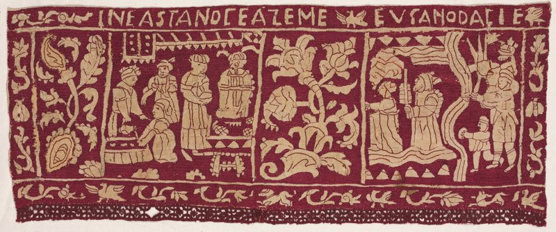
TĚŽKÉ ROZHODNUTÍ (5)
Stůl v podloubí v Malostranské besedě. Pivo, kostel svatého Mikuláše naproti. Období, kdy jsem hodně psal básně po hospodách, se ale konalo naposled v roce 2018 v hospodě Dílna na smíchovské náplavce. Pak už jen sem tam, jako třeba tahle báseň z Besedy. JÁmor je z Richarda Brautigana, to je můj klasický autor. A světlo je z Malostranského náměstí.
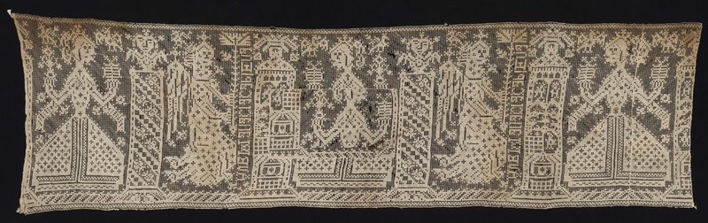
ZÁSNUBY (6)
Tisíc a jedna noc. A závěr básně je citát z Josefa Štefana Kubína.
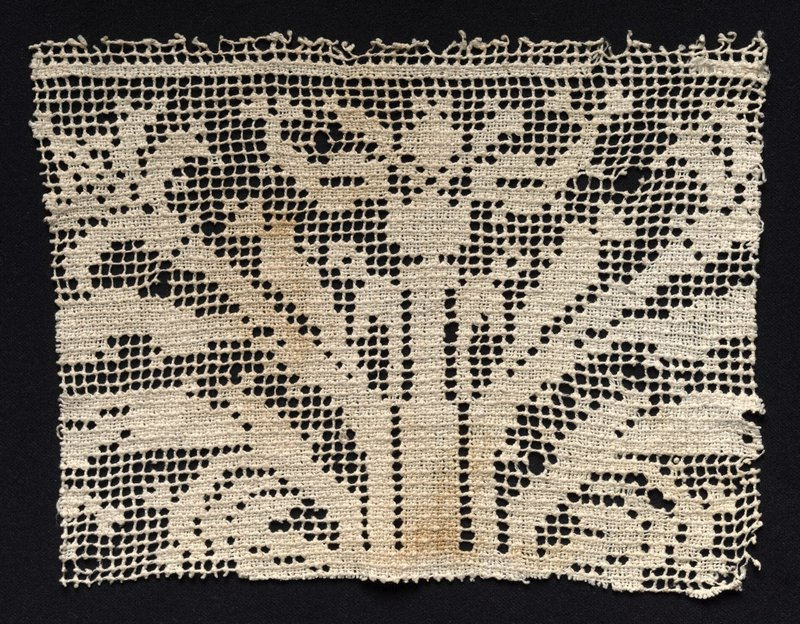
HLADINA (7)
Vzpomínka na kavárnu v Italské ulici v Praze na Vinohradech a na kavárníka Jakuba Honců. A prolíná se tam Ivan Wernisch, za kterým jsem v čase psaní sbírky Na třešňovém dřevě docházel na Malvazinky. Ivanova báseň se střevícem pana Čche.
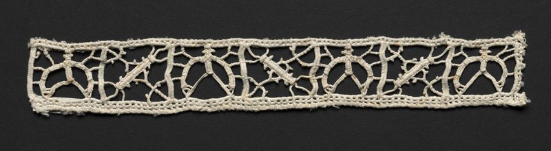
SPÁNEK (8)
Malvazinky. Hřbitov na Malvazinkách.
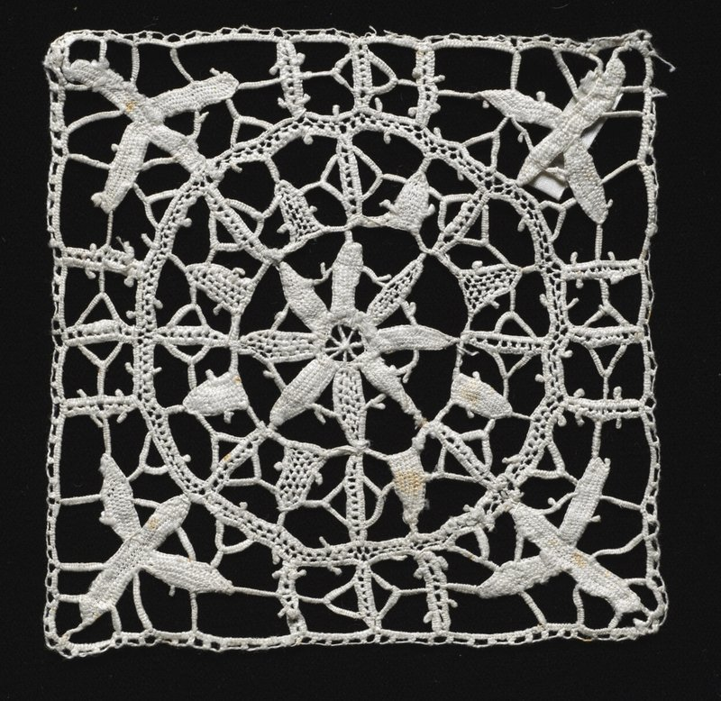
KOBERCE (9)
Oči jako koláče… Nejspíš z pohádky, z Pourrata? Koberce: fantastická role. To vůbec nevím, kdy a jak mě napadlo a je to jeden z obrazů, ke kterému se v té sbírce vracím pokolikáté a podivuji se mu.
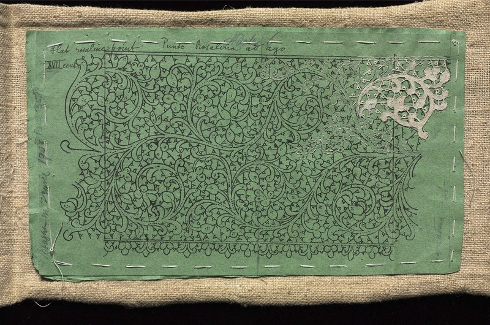
ZAHRADA (10)
Vracející se, stále se vracejí téma zahrady. Nejvíc ve mně utkvěla zahrada dětství, u domu babičky v Klatovech, u domu, ve kterém jsem bydlel do svých deseti let.
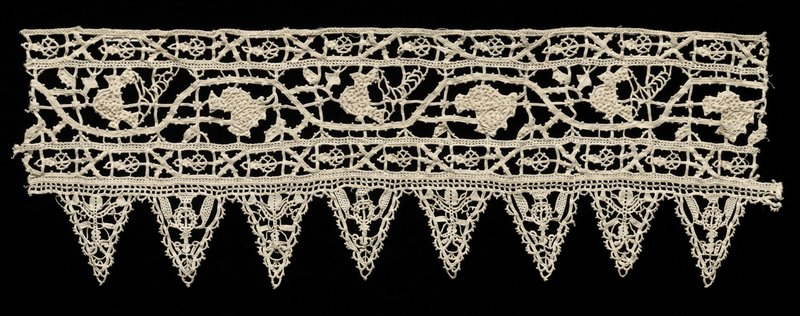
VEČER S ALEJÍ TOPOLŮ (11)
Časy maringotky v Kostelci u Heřmanova Městce, kde jsem pracoval šest let.
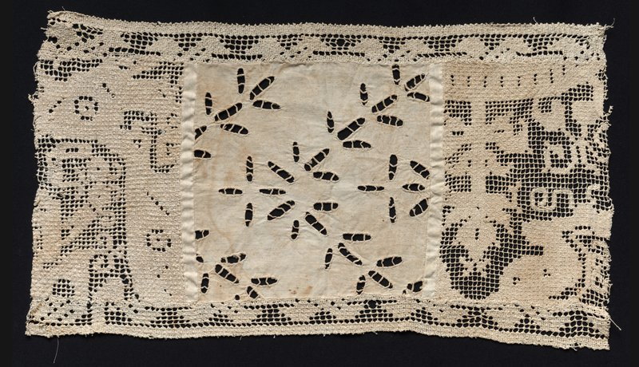
MÍČ (12)
Břízky jsou břízky u hřbitova na Malvazinkách, venku za hřbitovní zdí. Je tam i malé dětské hřiště, odtud míč. A výraz „mrsklo mu“ ve smyslu, že se někdo zbláznil, jsem slyšel poprvé od archivářky Terezy.
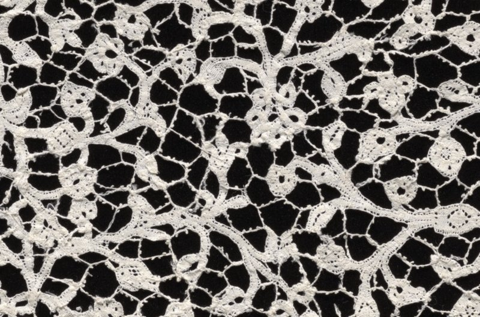
VE SKŘÍNI (13)
Těžko to z textu básně nějak konkrétně doložit, ale pamatuju si velmi dobře, že vznikla pod vlivem próz Bruno Schulze, které jsem tehdy překládal.
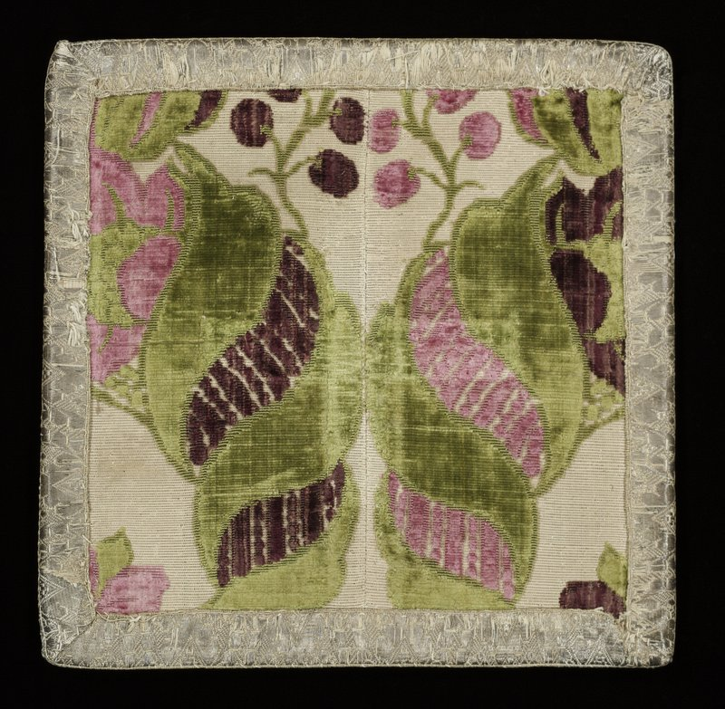
VEČERNÍM (14)
Maringotka v Kostelci. V téhle básni velmi realisticky popsáno. Vřes na kraji lesa, ano, čerpadlo vrčí z vrtu.
V básních vzpomínám většinou na to, co na té práci a na tom místě bylo pěkné, i když vím, že to zase tak idylické nebylo. Ale v Praze se mi na to pěkně vzpomíná. Na to, co v Praze není, na samotu uprostřed přírody. Na cestu vlakem Polabím do Přelouče a pak motoráčkem do Kostelce nebo jenom do Heřmanova Městce a tam na pivo do Edenu a pak pěšky nocí do maringotky, po asfaltce třešňovou alejí anebo zadní cestou kolem psího cvičáku a pak přes pole a vyjdu nahoře u chatiček, u zpustlé vily, u statku s oprýskávajícími lvy na sloupcích vrat a podívám se dolů a tam je rozsvícená krajina, Pardubicko do dálky a dálky a nahoře rozsvícené nebe…
To horší, co jsem tam zažíval, je ve starších rukopisných sbírkách. A vůbec se mi nechce básně plné zoufalství a jistých příznaků šílenství publikovat. „V Kostelci tam se nakonec všichni zblázní, teď už to jde i na moji ženu, to víš, ve stáří, ona pochází z Kostelce…“ říká mi jeden... Jeden z Pardubic...
A já jsem v Praze a kreslím si Kostelec idealizovanou průpiskou. Čáp přeletí nad údolíčkem, potok šumí.
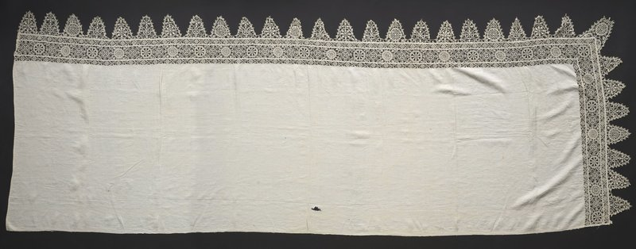
ĆÍ? (15)
Vůbec nevím, jak tahle báseň vznikla. Považuji ji za jednu z těch nejlepších ve sbírce a víc nevím.
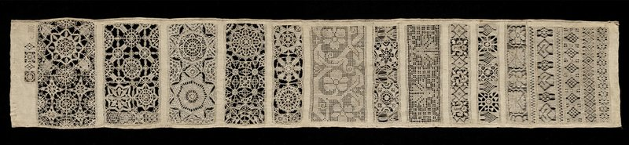
PLUJÍ (16)
Pod dojmem nástěnných maleb v klášteře v Praze Emauzích.
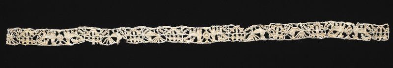
VLAHÝ VEČER (17)
Žofín, ostrov naproti archivu, kde jsem byl šest let vrátným.
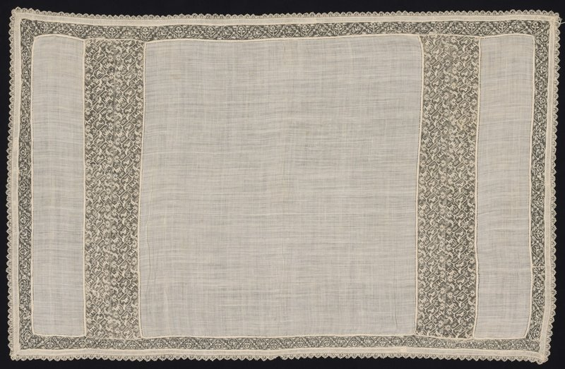
ADVENT (18)
Adventní čas. Archivářka Veronika. Jakub Synecký u piva. V kostele už Betlém, ale ještě ne Narození, oslík jde skalami. V čase archivu jsem navštěvoval dosti často kostel sv. Vojtěcha, je naproti Žofínu.
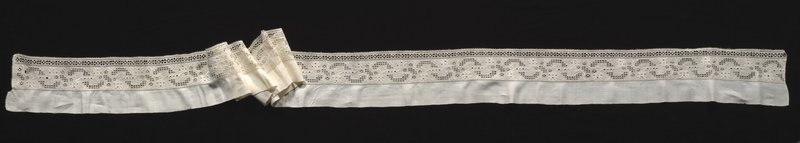
V PŮLCE LÉTA (19)
Sobota nebo neděle, kdy směny na vrátnici bývaly tiché.
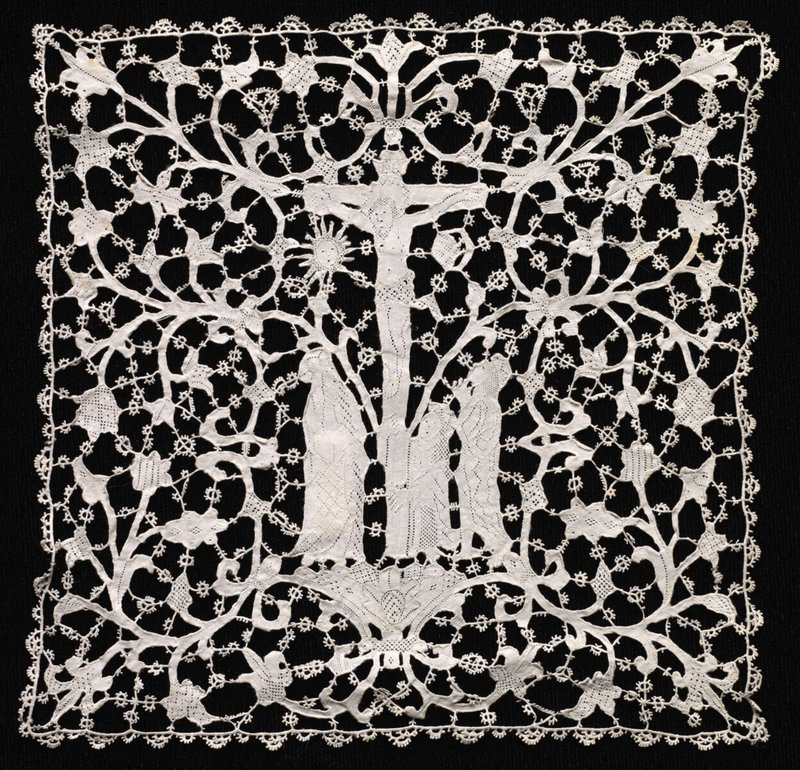
KRISTA KRÁLE (20)
Bohoslužba v kostele U Apolináře.
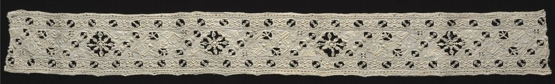
PROSINEC (21)
Domů do Radlic. Grog a rum je ze sobotní kunsthistorické zimní vycházky Jakuba Syneckého.
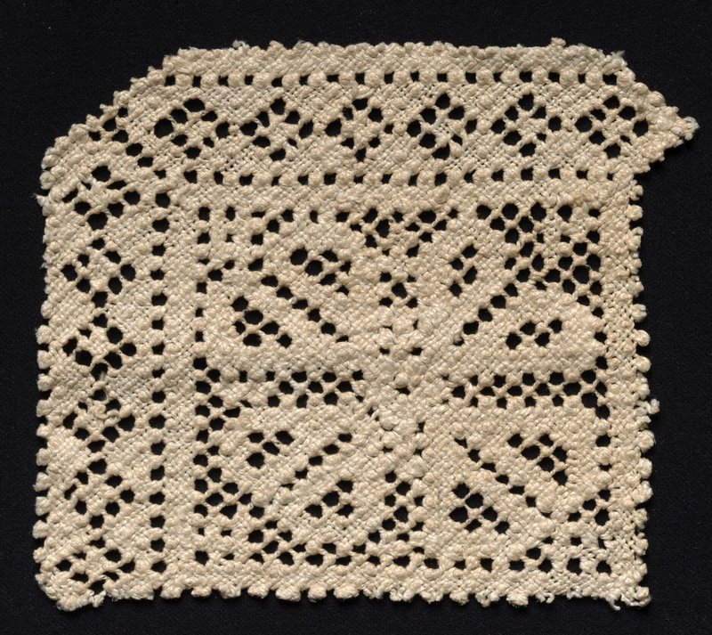
ZA ŘEKOU (22)
Ze snu a ve vzpomínce na Labe u Přelouče.
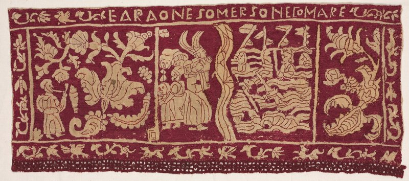
SVÁTEK (23)
Kostel svaté Kateřiny na Novém Městě, který vyvolává mnohé jiné kostely v Čechách, u kterých kvetou lípy. Na konci básně ale ve vůni lip nevstupujeme na nebe, najednou, za stromy, vidíme tance elfů, Puka, Titanie a Oberona.
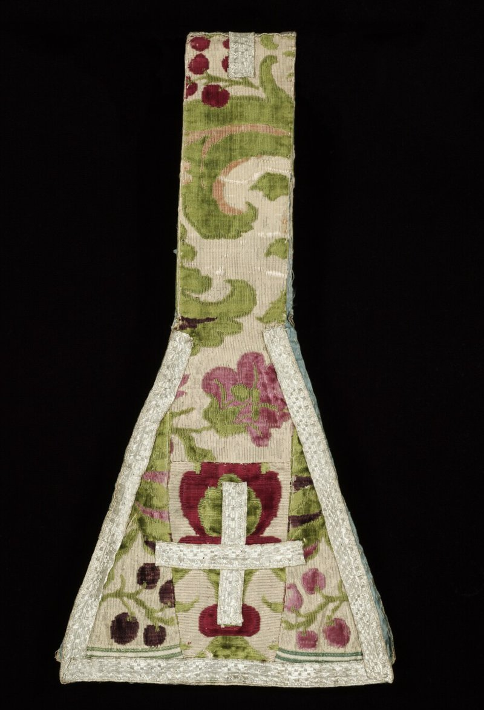
ANO, NE (24)
Kostel svaté Kateřiny, staročeská Legenda o svaté Kateřině.
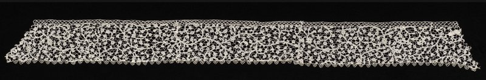
VYŠEHRAD (25)
To je starší báseň, vymykající se z datace sbírky, není z roku 2023, ale je napsaná o pár let dříve u stolku na smíchovské náplavce čili v letním posezení hospody Dílna čili s pohledem přes řeku, už nakoukaným, ještě neznešvařeným záplavou lidí na levé straně Vltavy.
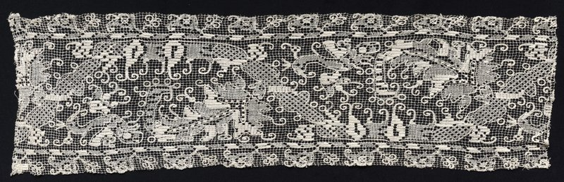
SLUNCE V OČÍCH (26)
Dovolená ve Vodňanech.
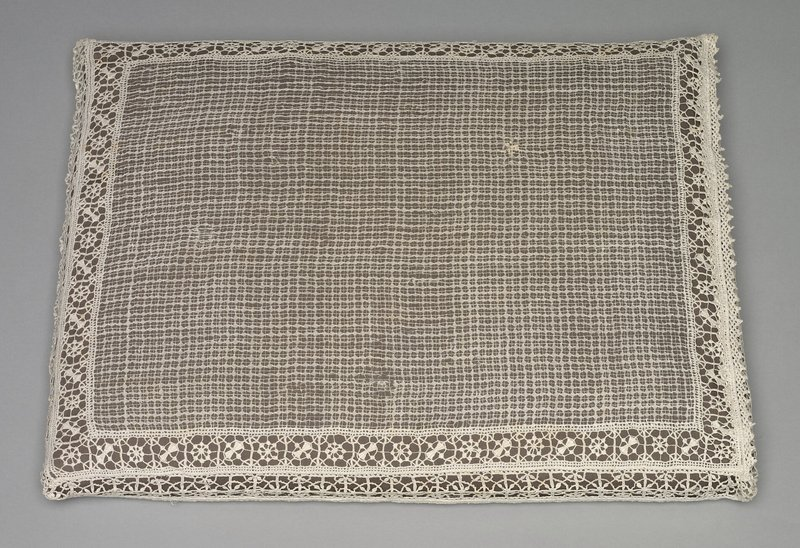
OD STOLKU (27)
Vinárna „U Španěla“ v Lípové ulici v Praze na Novém Městě. Newtonovy nohy do básně přivolaly blízké budovy Matematicko-fyzikální fakulty v ulici Ke Karlovu. Při jedné zimní vycházce Jakuba Syneckého zavedl vycházkáře fyzik oslovený před budovou až do nitra fyzikální laboratoře.
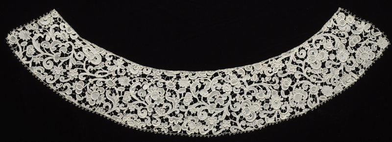
APOLINÁŘSKOU (28)
Cestou z vinárny „U Španěla“ na tramvaj na Palackého náměstí. Robert Antropius už tehdy pracoval v Kateřinkách jako terapeut. Z vinárny jsem chodíval rád poněkud delší cestou, podél Kateřinek k Apolináři a pod zdí Botanické zahrady dolů do ulice Na slupi, u Alžbětinek zahnout napravo, kolem vstupu do Botanické zahrady, ke kostelu svaté Trojice a potom pod Emauzy a na Palackého náměstí. Po cestě je naproti zdi Botanické zahrady budova léčebny závislostí, odtamtud okno alkáčů.
V básni není konkrétní citát, ale myslel jsem při jejím psaní na poezii Kennetha Patchena. K výboru Když jsme tu byli spolu v překladu Jana Zábrany se vracím pravidelně.
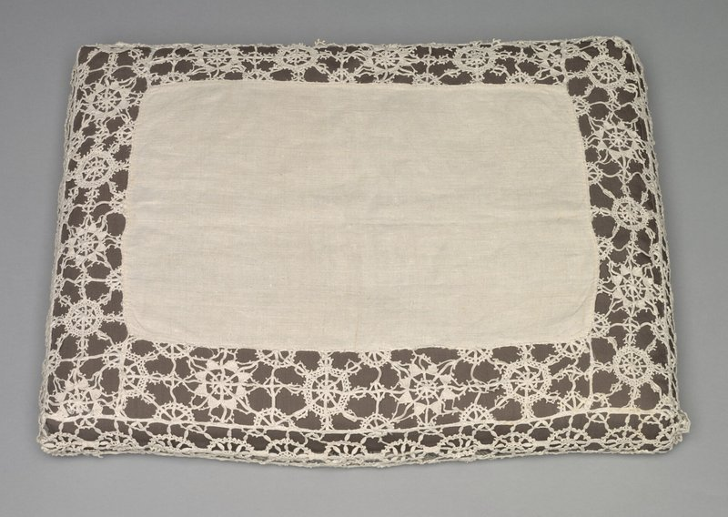
POTICHU (29)
Začátek básně evokuje zahradu za kostelem svaté Kateřiny čili V Kateřinkách. Vraky aut v sadu je vzpomínka z okolí Chebu, kde jsem začínal u geologů v maringotce coby „hlídač vrtů“.
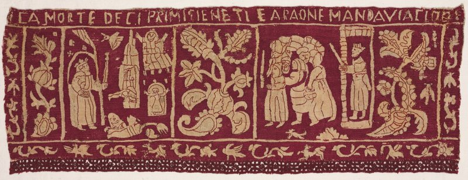
SVĚCENÍ (30)
Lokality jsou v básni vyjmenovány. Jakub Synecký, kterému je báseň věnována, je kunsthistorik, dříve odborný asistent na fakultě, později učenec působící mimo instituce a též štamgast v Soukendě v Soukenické ulici na dolním Novém Městě Pražském.
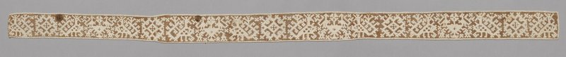
SLUNCE A HOUSLIČKY (31)
Při pohledu na reliéf na domě proti vinárně „U Španěla“ v Lípové ulici. Housličky ladí je citát z Egona Bondyho, respektive z písně Plastic People.
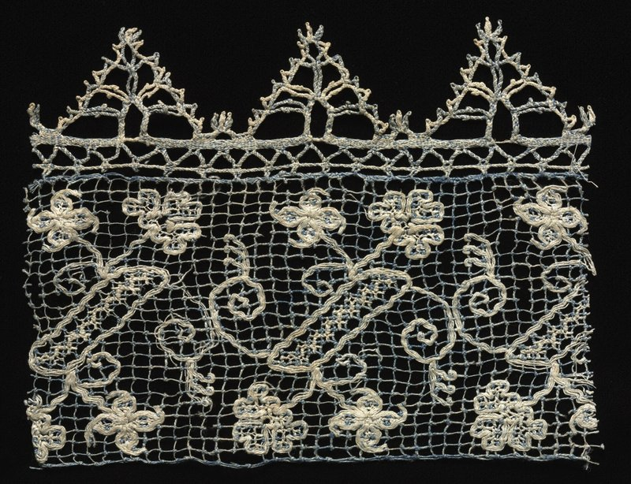
I STAVĚL… (32)
První řádek básně je citát z Aloise Jiráska Starých pověstí českých. Týká se Emauzského kláštera, tak jako celá báseň.
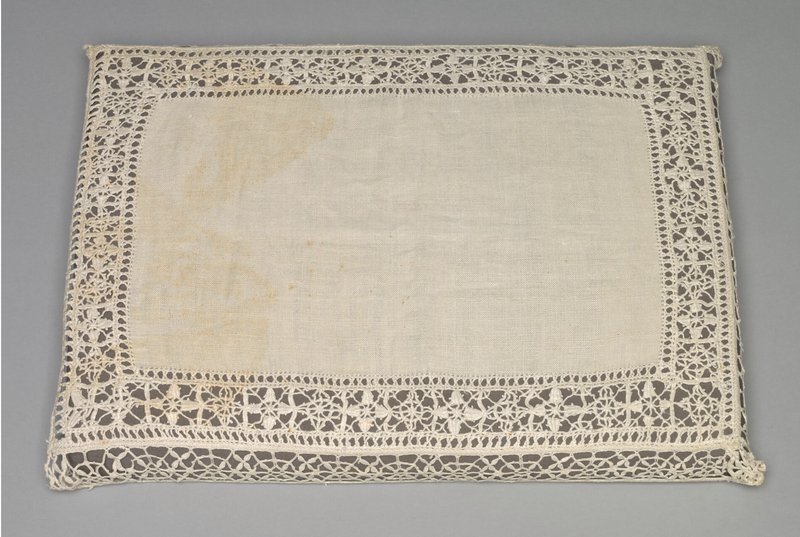
ZHOUPNE SE (33)
Terasa v Emauzích a smíchovská náplavka, na řece se houpou lodě, na pontonu je zaparkovaný zvon. Zvon zazní a dozní. A píseň je: Josquin des Prez - Mille Regretz.
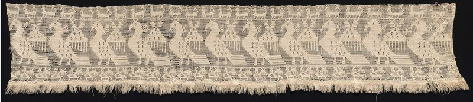
ZA POSEDEM (34)
Lesy a nimrodi, Kostelec u Heřmanova Městce.
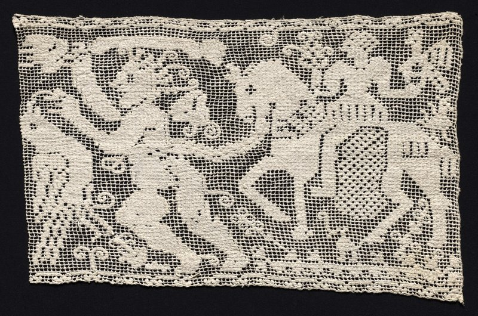
ZATÁČKA (35)
Dovolená v obci Dub u Vlachova Březí. Tehdy jsem pracoval na vydání souborného díla Milana Kocha, které nakonec nakladatel předal mocensky lépe postavenému redaktorovi. Ale vydání Kochova díla jsem inicioval já, po tolika letech, našel jsem nakladatele a sepsal jsem doporučení Kochova díla pro grant a knížka vyšla.
Psanec Floyd je přezdívka, kterou Milan Koch udělil sám sobě. A hráz rybníka v Dubu bylo duchovní místo, kde to vypadalo, že tudy vede cesta k nebi, řezbami v pařezech a ve zbytcích kmenů stromů na hrázi, rozsvícenými svíčkami navečer v nich. Poslední řádek básně: v Dubu zbylo ještě docela dost plaňkových plotů, tehdy.
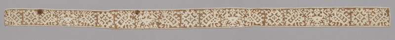
V MOKRÉ OMÍTCE (36)
Malby v klášteře v Emauzích. Chorál zpívaný emauzskými řeholníky. Vlčí hlavy jsou nejspíš z Henri Pourrata.
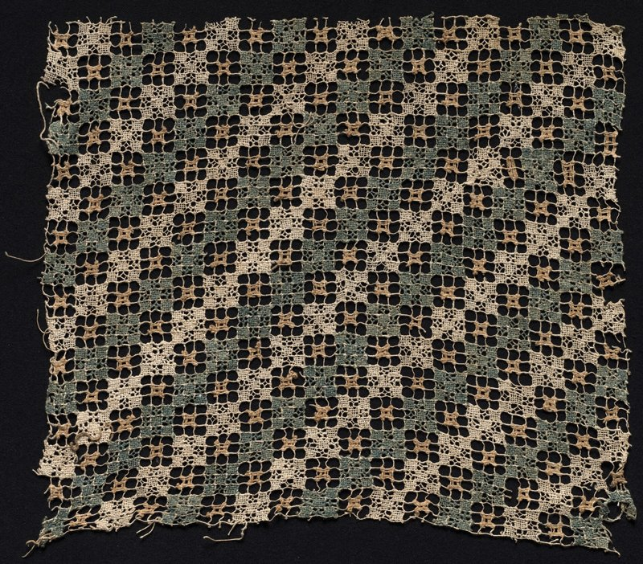
POD MLHOU (37)
Další ze vzpomínek na Kostelec u Heřmanova Městce.
Brankou... Mrakem v mokrém poli...
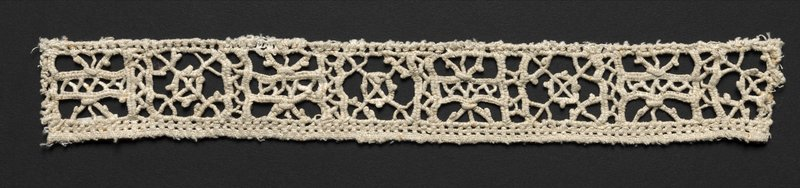
JO HO HÓ (38)
Návštěva u syna a vnuka v Trondheimu v Norsku. Ruka slepce potmě je ohlas z Knihy o hrdinech a hrobech Ernesta Sábata.
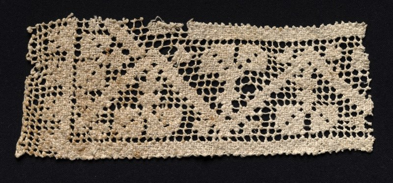
NA DVOŘE (39)
Báseň se odvíjí od prvních záběrů filmu Valerie a týden divů. Do celé té básně pronikly obrazy z filmu, což se mi zas tak často nestává a nechci, aby se mi to stávalo. Ale když už to jednou létajícím kobercem filmu začne, tak to filmem taky skončí, knihovnou ve Jménu růže, která se propojí s knihovnou v Klementinu.
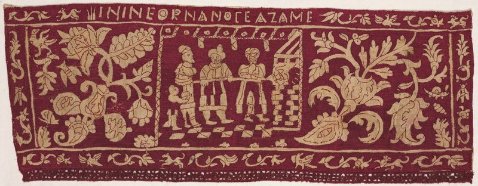
KATEŘINKY (40)
Kateřinky jsou Kateřinky, v kostele svaté Kateřiny je tam opravdu svatý Patrik se zvířetem podobajícím se kajmanovi pod nohama, je tam i ostatek svaté Kateřiny ze Sinaje, svatý Blažej a svatý Cyprián a nepříliš hojně navštěvovaná pravoslavná bohoslužba. A v Kateřinkách naproti jsou pacienti psychiatrie a je tam terapeut Robert Antropius a s kajmanem se v básni objevuje Dr. John z New Orleansu a hraje v Kateřinkách na piano někde vzadu u plotu v bezových keřích, u dílny údržby a baráčku spisové služby, kde se papíry silážují a silážují. Chodit po špendlících a jehlách. Podívejte se, co dokážou! Chodit po cechovaných třískách! Král Zuluů! I Walk On Guilded Splinters. A román Jaromíra Johna Pampovánek, jehož třetina se odehrává v Kateřinkách.
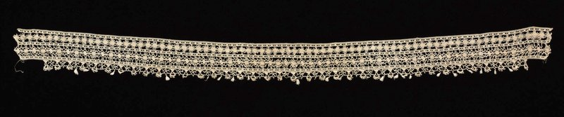
NÁBŘEŽÍ (41)
Cesta do práce ráno o půl šesté z Palackého náměstí pěšky k Národnímu divadlu, kde v ulici Na Struze nachází se Archiv. Anebo ráno po noční, na zastávku tramvaje u Mánesa. Šest let.
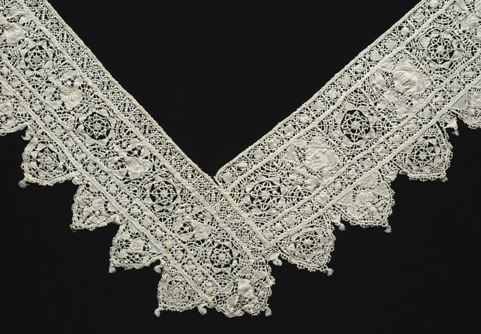
MÁVÁM (42)
„Mávám,“ to Petr Král rád používal. Byl to jeden z nejvíc důležitých lidí v mém životě.
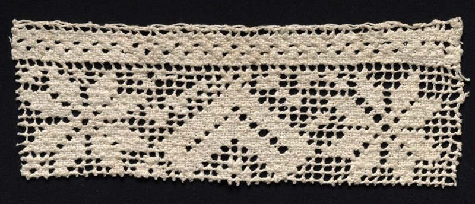
RÁKOSÍ (43)
Nevím… Ale vypadá to, tou marnou a naprosto bezvýchodnou atmosférou, na báseň napsanou u piva v ponuré hospodě U zpěváčků pár domů od Archivu. Pod hospodou U zpěváčků je vchod do pekla.
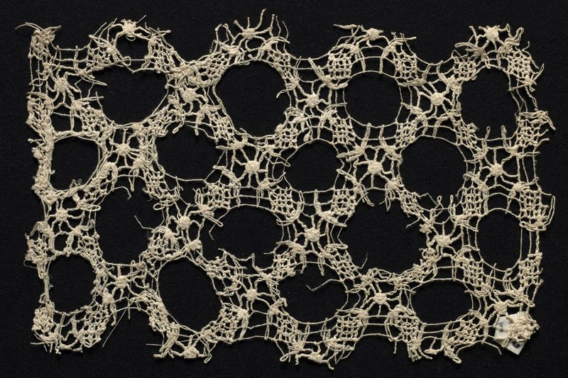
ZAHRABANÝ VRCH (44)
Tak tohle vím určitě. Dost opilý jsem báseň napsal na židli venkovního posezení hospody Dílna na smíchovské náplavce, pár let před vznikem sbírky Na třešňovém dřevě. Byla tma, tehdy tam neměli venku žádné venkovní hospodské osvětlení, sotva jsem viděl na průpisku. To křoví z textu tam bývalo, kousek dál od Dílny, v předpolí železničního mostu, ještě to nebylo ohrazené. Večer se tam slízali feťáci, stály tam dva nebo tři nepojízdné vraky, tam jeli rychlostí, o kterém se formuli 1 nikdy ani nesnilo. Nebylo moc radno těmi místy pozdě navečer chodit. Oni tam měli ty Gala lusky. Cyklisti ve dne zas galusky. Někdo zase gauloisky. Turisti, galimatyáš.
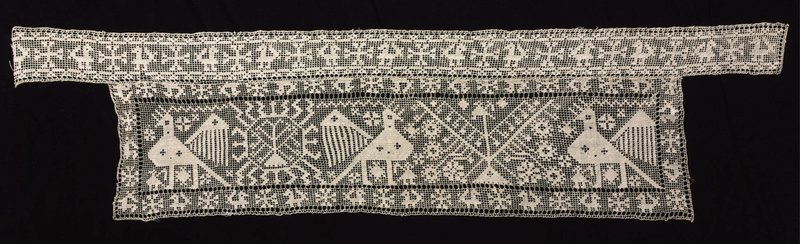
FRUKO SCHULZ (45)
Bruno Schulz, polský Franz Kafka, kterého jsem překládal. Fruko Schulz, výrobce alkoholu v Jindřichově Hradci. Týdenní dovolená v Jindřichově Hradci. Dva básníci, kteří se v Jindřichově Hradci narodili a žili v něm. Vladimír Holub a František Daniel Merth.
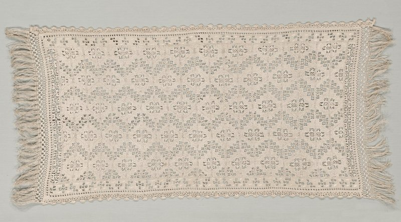
ORCHESTR NOCI (46)
Nádražíčko v Kostelci u Heřmanova Městce. A ohlas z Bruno Schulze.
SHŮRY (47)
Kateřinky.
ŠEROSVIT (48)
Kostel svaté Kateřiny.
KAPKY (49)
Doma v kuchyni.
LEDEN (50)
Doma v Radlicích.
PŘÍBĚH ZE SINAJE (51)
Báseň vychází z vyprávění pravoslavného faráře v kostele svaté Kateřiny. Byla to vlastivědná vycházka pro učitelky, která díky panu farářovi vyšla opravdu moc pěkně. V domluvenou hodinu, kdy nám slíbil otevřít kostel, se objevil ve vchodu v bohoslužebném rouchu, s velikým křížem na krku. V kostele nás nechal něco povídat a pak si vzal slovo a líčil, jak byl v klášteře na hoře Sinaj, který stojí na tom místě, ani vlastně nevíme, kolik let. Pravděpodobně od chvíle, kdy tu Mojžíš spatřil hořící keř. Ten keř na Sinaji pořád je, říkal pan farář. I podle internetu tam ten keř pořád je, jak jsem se pak díval doma. A taky je tam tělo svaté Kateřiny, a z něj pan farář dostal drobeček a propašoval ho v krabičce „tygří masti“, čímž se vracím k úplně první básní této knížky. A relikvie je teď v ikoně svaté Kateřiny v kostele na Novém Městě. A ještě pan farář líčil ranní bohoslužbu na hoře Sinaj, která začíná ráno za tmy, a je to vymyšlené tak, že během bohoslužby vyjde slunce, slouží se venku, v létě je tam vedra dost, v zimě tam leží sníh, a slunce vyjde zpoza hor a ozáří hory a poušť pod horami, každý den znova. Na horu Sinaj je možné dojít pouze pěšky nebo vyjet na oslu... Svatá Kateřino, oroduj za nás.
PROSTÉ (52)
Ano, tak je to prosté…
© Petr Motýl / design Zebry